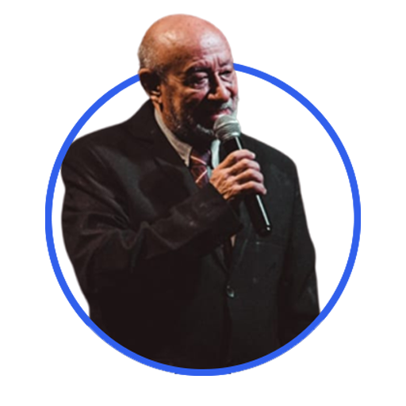

Leonardo Botelho dos Passos, brasileiro, casado, pastor evangélico,
residente atualmente em Itacoatiara - Amazonas, nasceu em 1950, um tempo onde o
evangelho do Senhor era vergonhoso para algumas pessoas.
Nesta época de tantas tribulações chamou o Senhor á este homem ainda criança,
fazendo-o ler toda a Bíblia em poucos meses, de forma que entendeu sozinho o que é a salvação em Cristo.